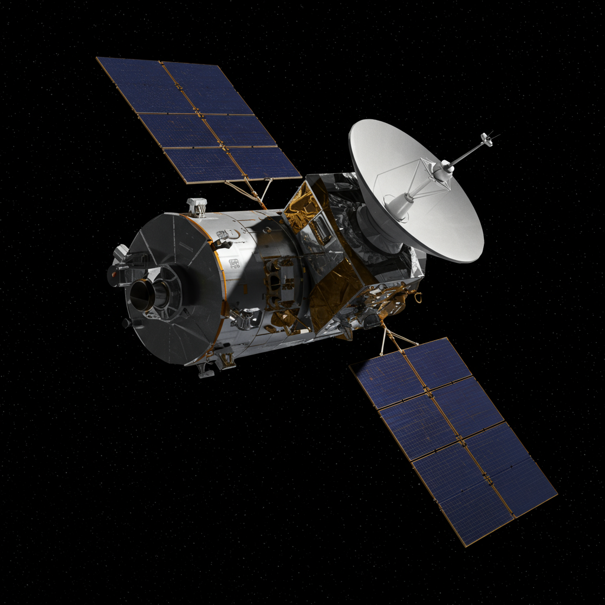
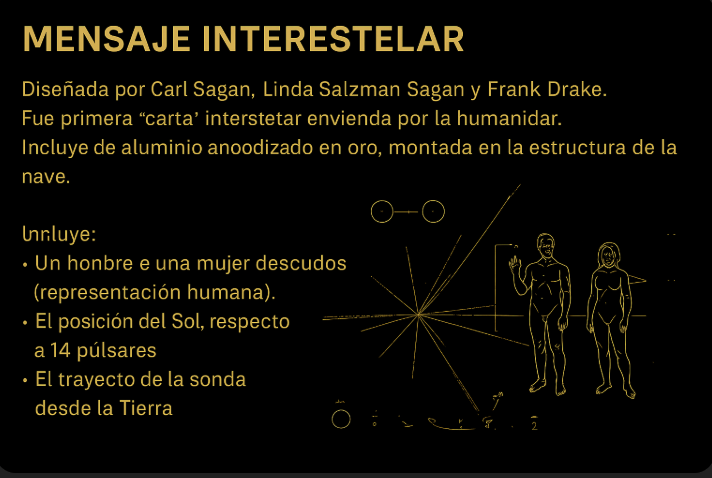

Pioneer 10 y 11
Agencia: NASA
Lanzamientos: Pioneer 10: 2 de marzo de 1972 | Pioneer 11: 6 de abril de 1973
Pioneer 10
Fue la primera nave en atravesar el cinturón de asteroides y en realizar un sobrevuelo cercano a Júpiter. Captó imágenes detalladas del planeta y estudió su entorno magnético y su radiación. Su última señal fue recibida en 2003, cuando ya había salido del Sistema Solar.
Pioneer 11
Utilizó la gravedad de Júpiter para viajar hacia Saturno, siendo la primera nave en explorar ese planeta. Descubrió anillos nuevos, lunas y recopiló datos sobre el campo magnético y atmósfera. Se recibió su última transmisión en 1995.
Impacto histórico
Ambas sondas allanaron el camino para la exploración interestelar. Fueron precursoras de las misiones Voyager y portadoras de una placa con información sobre la humanidad dirigida a posibles civilizaciones extraterrestres.
Mensaje interestelar
